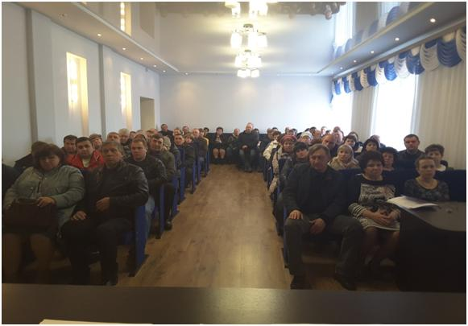

Совещание в администрации Мордовского района Тамбовской области с предпринимателями района
29 марта 2017 года генеральный директор АО МК «Фонд содействия кредитованию малого и среднего предпринимательства Тамбовской области» (далее – Фонд) Андрей Михайлович Блудов по приглашению главы администрации Мордовского района Тамбовской области Сергея Викторовича Манна принял участие в совещании с предпринимателями района.
В ходе данного совещания А.М. Блудов довел до предпринимателей информацию о перечне услуг, которые предоставляет Фонд субъектам малого и среднего предпринимательства (далее – МСП). Среди них – меры финансовой поддержки МСП (предоставление поручительств (по кредитам, договорам финансовой аренды (лизинга), договорам банковской гарантии), выдача микрозаймов, поиск и сопровождение проектов МСП в целях обеспечения кредитно-гарантийной поддержкой региональных и федеральных институтов развития), а также такие направления, как популяризация предпринимательской деятельности и поддержка бизнес-образования молодежи.
По окончании совещания, все предприниматели смогли задать интересующие их вопросы.
